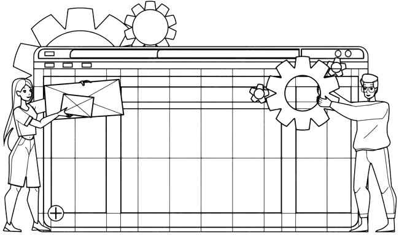
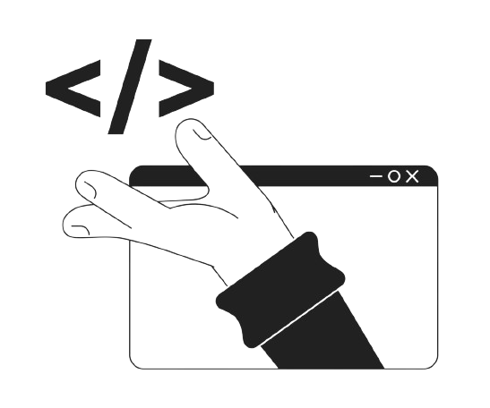

DREF Zinédine
Intégrateur web
Salut ! Je suis un jeune de 23 ans, passionné par le développement web, l'UI/UX et l'accessibilité. Actuellement en formation en tant qu'intégrateur web chez Openclassroom, je suis déterminé à approfondir mes compétences et à me perfectionner dans le monde fascinant de la création web.
A propos
Au cours de ma formation, j'explore différentes facettes du développement web pour développer une solide compréhension des technologies front-end. Mon intérêt particulier pour l'UI/UX et l'accessibilité me motive à trouver des solutions innovantes pour rendre le web plus convivial et inclusif.
Mes services
Création de Sites Front-End
Conception et développement de sites web attrayants et fonctionnels.
Utilisation de technologies telles que React, HTML, CSS, et JavaScript pour créer des interfaces utilisateur modernes.
Optimisation SEO
Analyse approfondie des mots-clés et de la concurrence pour améliorer la visibilité sur les moteurs de recherche
Mise en œuvre de bonnes pratiques SEO telles que l'utilisation de balises HTML sémantiques, des URLs lisibles, et l'optimisation des balises meta.
Maintenance de Sites Web

Gestion régulière des mises à jour de contenu, des plugins et des thèmes pour assurer le bon fonctionnement du site.
Sauvegarde régulière des données pour prévenir toute perte accidentelle et résolution rapide des problèmes liés à la sécurité.
Mes Projets


Mes Compétences
Maîtrise du HTML/CSS :
Expertise solide dans la création et la structuration de pages web en utilisant les langages HTML et CSS, assurant une présentation visuelle attrayante et une navigation fluide.
Conception adaptative (Responsive Design)
Capacité à concevoir des sites web réactifs qui offrent une expérience utilisateur optimale sur divers appareils, garantissant une accessibilité maximale.
JavaScript Interactif :
Utilisation compétente de JavaScript pour ajouter des fonctionnalités interactives et dynamiques, permettant une interactivité accrue et une expérience utilisateur améliorée.
Gestion de la Compatibilité des Navigateurs :
Expertise dans la résolution de problèmes de compatibilité entre navigateurs, assurant une consistance et une fonctionnalité optimale quel que soit le navigateur utilisé.